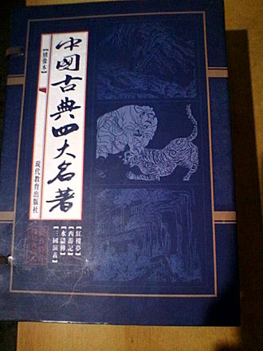
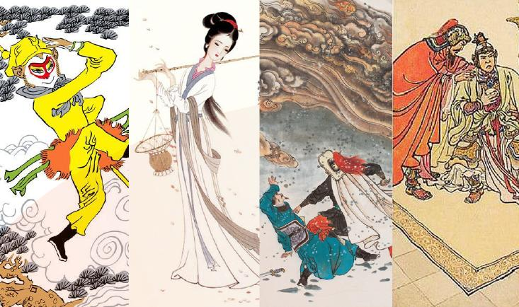

Classic Chinese Novels
INTRODUCTION:
In sinology, the Classic Chinese Novels are two sets of the four or six best-known traditional Chinese novels. The Four Classic Novels include Romance of the Three Kingdoms, Journey to the West, Water Margin and Dream of the Red Chamber, and the Six Classic Novels add Rulin waishi and Jin Ping Mei to this list. These are among the world's longest and oldest novels,[1] and they are the most read, studied and adapted works of pre-modern Chinese fiction.
TIPS:Change the browser window size (width), the background color of the INTRODUCTION will change.


Several terms have been used to refer to the novels and various subgroupings of them. Romance of the Three Kingdoms, Journey to the West, Water Margin, and Dream of the Red Chamber are most commonly grouped as the Four Great Classic Novels (Chinese: 四大名著; pinyin: sì dà míngzhù; lit.: 'four great masterpieces'). Another term used is Classical Novels (simplified Chinese: 古典小说; traditional Chinese: 古典小說; pinyin: gǔdiǎn xiǎoshuō). Prior to the composition of Unofficial History of the Scholars and the Dream of the Red Chamber, the earlier four began to be referred to as the Four Great Masterworks (四大奇书; 四大奇書; sì dà qíshū; 'four extraordinary books').In chronological order, they are:
The four novels were highly influential in the development of vernacular works in Chinese literary history. Traditionally, fiction and drama were not held in "high regard" in the Chinese or East Asian literary hierarchy,[15] and they were generally not seen as true "literature" by scholars. Writers in these forms would not have the same level of prestige as poets or scholars of Chinese classics would have had.
If you are interested in Chinese culture, you can search Google directly
back to my homepage(index)
back to my repository(index)
The current time is / ::